Was ist die BetreuerApp?
Die BetreuerApp ist das digitale Verwaltungssystem des Christlichen Schulförderverein Minden e.V. (CSFV) für alle Betreuer-AGs an den angeschlossenen Schulen. Sie deckt den gesamten Ablauf ab – von der Einladung neuer Betreuer über die Stundenerfassung bis zur Abrechnung mit der Buchhaltung.
Benutzerrollen
| Rolle | Wer? | Kann was? |
|---|
| Admin |
Personal- und Finanzbuchhaltung des CSFV |
Alles sehen und verwalten: Betreuer, Schulen, Budgets, Förderprogramme, Auswertungen, Systemeinstellungen |
| Koordinator |
Lehrer / Ansprechpartner an einer oder mehreren Schulen |
Betreuer für eigene Schulen einladen, prüfen, aktivieren; Stundennachweise genehmigen oder ablehnen |
| Betreuer |
Schüler, die eine AG leiten |
Eigene Stunden erfassen, monatliche Nachweise einreichen, Dokumente hochladen, Profil bearbeiten |
ℹ️
Keine eigene Anmeldung möglich
Betreuer können sich nur über einen Einladungslink registrieren, den der Koordinator erstellt. Eine eigenständige Registrierung ohne Einladung ist auf der Seite /registrierung/ möglich, muss aber vom Admin freigeschaltet sein.
Anmelden
Die BetreuerApp ist über den Browser erreichbar. Rufen Sie die Adresse auf, die Ihnen mitgeteilt wurde, und melden Sie sich mit Ihrem Benutzernamen und Passwort an.
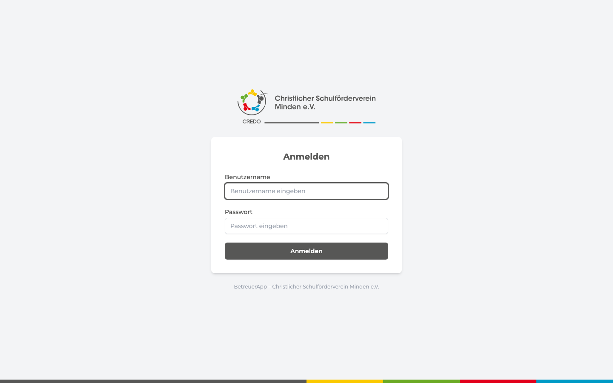
📷 Screenshot: Anmeldeseite (login.png)
'">
Anmeldeseite der BetreuerApp – Benutzername und Passwort eingeben und auf „Anmelden" klicken
1
Benutzername eingeben
Geben Sie Ihren Benutzernamen ein. Dieser ist meist Ihr Nachname oder die ersten Buchstaben Ihres Namens (z.B. mmustermann).
2
Passwort eingeben
Bei der ersten Anmeldung haben Sie Ihr Passwort über den Einladungslink gesetzt. Das Passwort kann unter „Profil → Passwort ändern" jederzeit geändert werden.
3
„Anmelden" klicken
Nach erfolgreicher Anmeldung landen Sie automatisch auf Ihrem Dashboard (Admin-, Koordinator- oder Betreuer-Dashboard, je nach Ihrer Rolle).
⚠️
Mehrfach falsch angemeldet?
Nach mehreren fehlgeschlagenen Anmeldeversuchen wird der Zugang vorübergehend gesperrt. Bitte wenden Sie sich in diesem Fall an Ihren Koordinator oder den Admin.
Gesamtprozess im Überblick
Der folgende Ablauf zeigt, wie ein neuer Betreuer in das System kommt – von der Einladung bis zur ersten Auszahlung:
🔗
Einladungslink erstellen
Koordinator
→
📝
Registrierung ausfüllen
Betreuer
→
🔑
Passwort per E-Mail setzen
Betreuer
→
🔍
Daten prüfen & Dokumente generieren
Koordinator
→
📄
Dokumente unterschreiben & hochladen
Betreuer
→
→
⏱️
Stunden erfassen & einreichen
Betreuer
→
💶
Genehmigen & Abrechnung
Koordinator / Admin
Admin – Dashboard
👤 Nur für Admins
Nach der Anmeldung sehen Admins das Admin-Dashboard. Es zeigt auf einen Blick alle wichtigen Kennzahlen des gesamten Systems.
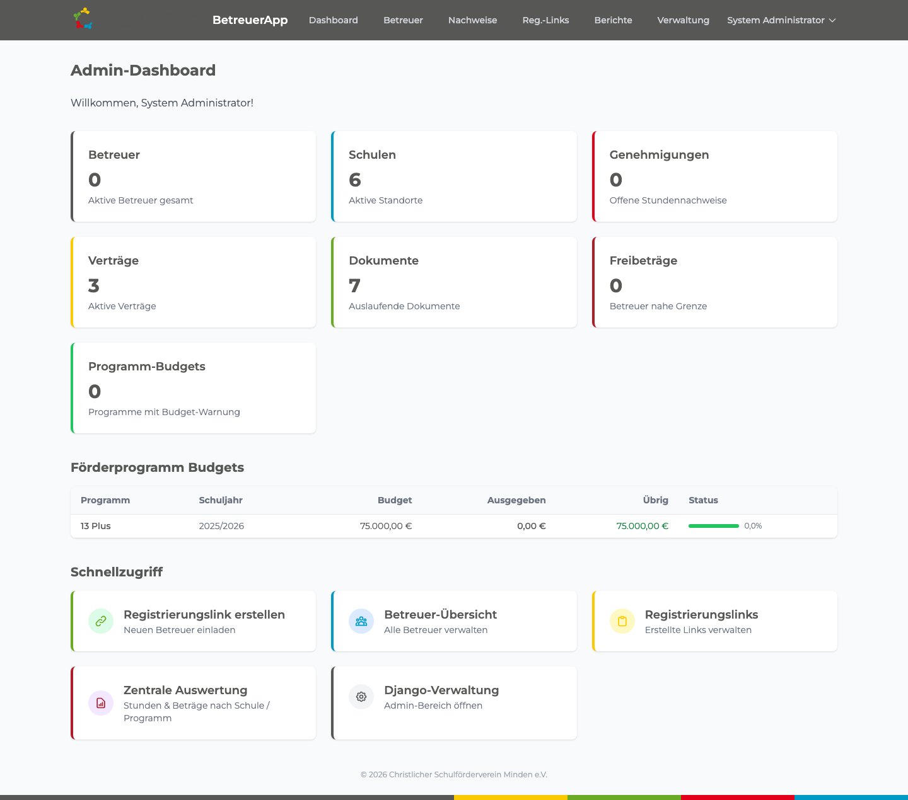
📷 Screenshot: Admin-Dashboard (admin_dashboard.png)
'">
Admin-Dashboard mit Übersichtskacheln und Förderprogramm-Budgettabelle
Die Kennzahl-Kacheln im Überblick
| Kachel | Was wird angezeigt? |
|---|
| Betreuer | Anzahl aller aktiven Betreuer im System |
| Schulen | Anzahl der aktiven Schulstandorte |
| Genehmigungen | Stundennachweise, die auf Genehmigung warten |
| Verträge | Aktive Verträge systemweit |
| Dokumente | Auslaufende Dokumente (z.B. Führungszeugnisse) |
| Freibeträge | Betreuer, die sich dem Jahresfreibetrag (3.300 €) nähern |
| Programm-Budgets | Förderprogramme mit Budget-Warnung (orange = Warnung, rot = überschritten) |
Förderprogramm-Budgettabelle
Unterhalb der Kacheln sehen Admins eine Tabelle aller Förderprogramme mit hinterlegtem Budget. Die Spalte Übrig ist farbig: grün = ausreichend, gelb = 80 % verbraucht, orange = 90 %, rot = 100 % (überschritten).
Schnellzugriff
Im unteren Bereich des Dashboards finden Sie direkte Links zu den wichtigsten Funktionen:
- Registrierungslink erstellen – Neuen Betreuer einladen
- Betreuer-Übersicht – Alle Betreuer verwalten
- Registrierungslinks – Erstelle Links verwalten
- Zentrale Auswertung – Stunden & Beträge nach Schule/Programm
- Django-Verwaltung – Systemeinstellungen (nur für technische Admins)
Betreuer verwalten
Über den Menüpunkt „Betreuer" (Navigationsleiste oben) gelangen Sie zur Betreuer-Übersicht.
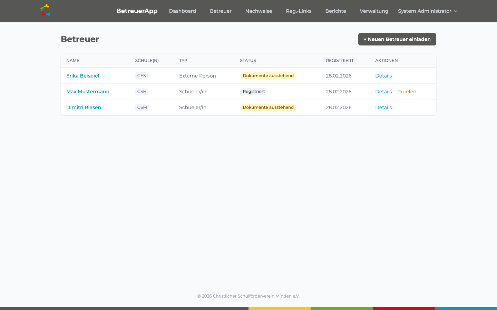
📷 Screenshot: Betreuer-Liste (betreuer_liste.png)
'">
Betreuer-Übersicht: alle Betreuer mit Status, Schule und Aktionen
Die Liste zeigt Name, Schule(n), Typ (Schüler/in oder Externe Person) und den aktuellen Onboarding-Status:
| Status | Bedeutung |
|---|
| Registriert | Formular ausgefüllt, noch nicht geprüft |
| Dokumente ausstehend | Vertrag generiert, Betreuer muss unterschreiben |
| Dokumente vollständig | Alle Dokumente hochgeladen |
| Aktiv | Betreuer kann Stunden erfassen |
| Inaktiv / Archiviert | Kein aktiver Einsatz mehr |
Betreuer-Detailseite
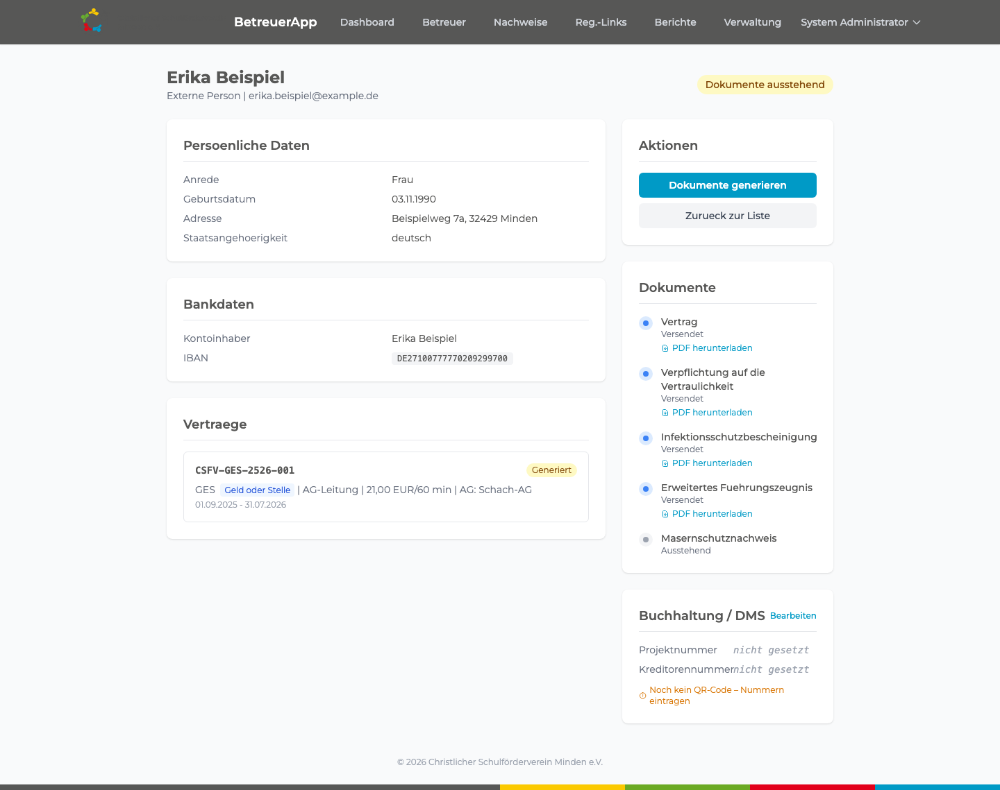
📷 Screenshot: Betreuer-Detail (betreuer_detail.png)
'">
Betreuer-Detailseite mit persönlichen Daten, Bankverbindung, Vertrag und Dokumentenstatus
Auf der Detailseite sehen Sie:
- Persönliche Daten (Anrede, Geburtsdatum, Adresse, Staatsangehörigkeit)
- Bankdaten (IBAN – aus Datenschutzgründen teilweise verdeckt)
- Den Vertrag mit Schule, Programm und Stundensatz
- Den Dokumentenstatus (ausstehend, hochgeladen, geprüft, abgelehnt)
- Buchhaltungsdaten (Projektnummer, Kreditorennummer) für den QR-Code
💡
Buchhaltungsdaten eintragen
Tragen Sie Projektnummer (8-stellig) und Kreditorennummer (5-stellig) ein, damit auf dem PDF-Stundennachweis ein QR-Code für die Buchhaltungssoftware erscheint.
Budget für ein Förderprogramm anlegen
Admins können für jedes Förderprogramm ein Jahresbudget hinterlegen. Das System berechnet dann automatisch, wie viel bereits ausgegeben wurde.
1
Django-Verwaltung öffnen
Klicken Sie im Schnellzugriff auf „Django-Verwaltung" oder rufen Sie /django-admin/ auf.
2
Zu „Schulen → Förderprogramme" navigieren
Wählen Sie das gewünschte Förderprogramm aus der Liste.
3
Budget eintragen
Im Abschnitt „Finanzen" finden Sie das Feld Budget (EUR). Tragen Sie den Betrag ein (z.B. 75000.00) und speichern Sie.
4
Budget wird automatisch berechnet
Das System summiert alle genehmigten Stunden × Stundensatz innerhalb des Schuljahres dieses Programms und zeigt den Verbrauch auf allen Dashboards.
ℹ️
Budget-Warnungen
Ab 80 % Verbrauch erscheint eine gelbe Warnung, ab 90 % orange und ab 100 % rot – auf dem Dashboard und in der Budgettabelle.
Freibetrag-Grenze anpassen
Ändert sich der gesetzliche Übungsleiterfreibetrag (aktuell 3.300 € pro Kalenderjahr), kann dies zentral in der Django-Verwaltung angepasst werden:
1
Django-Verwaltung → Schulen → Schuljahre
Das aktuelle Schuljahr öffnen.
2
Feld „Freibetrag Limit" anpassen
Den neuen gesetzlichen Betrag eintragen und speichern. Das System verwendet diesen Wert sofort für alle Berechnungen.
Zentrale Auswertung
Die zentrale Auswertung gibt einen vollständigen Überblick über alle genehmigten Stunden und die daraus resultierenden Auszahlungsbeträge.
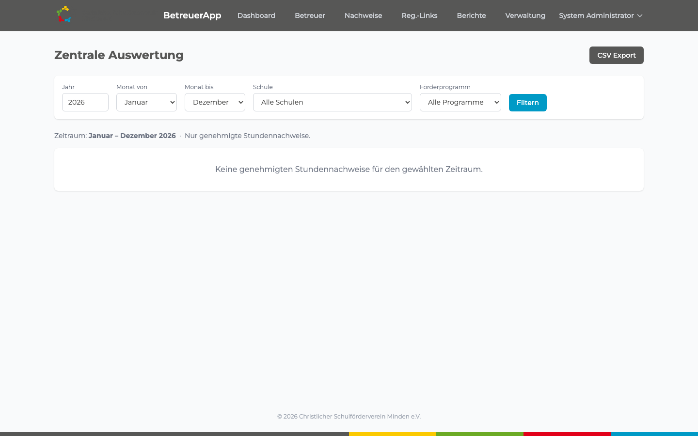
📷 Screenshot: Zentrale Auswertung (auswertung.png)
'">
Zentrale Auswertung – filterbar nach Jahr, Monat, Schule und Förderprogramm, mit CSV-Export
Filter nutzen
- Jahr: Das Kalenderjahr der Auswertung
- Monat von / bis: Zeitraum einschränken (z.B. nur September bis Dezember)
- Schule: Nur eine bestimmte Schule anzeigen
- Förderprogramm: Nur ein bestimmtes Programm anzeigen
Klicken Sie auf „Filtern", um die Ergebnisse zu aktualisieren. Mit „CSV Export" laden Sie alle Daten als Excel-kompatible Tabelle herunter.
💡
Tipp: Nur genehmigte Stunden
Die Auswertung zeigt ausschließlich genehmigte Stundennachweise. Eingereichte, aber noch nicht genehmigte Nachweise erscheinen erst nach der Genehmigung durch den Koordinator.
Django-Verwaltung (technische Einstellungen)
Über den Link „Django-Verwaltung" im Dashboard oder unter /django-admin/ gelangen technische Admins in den Systembereich. Hier können unter anderem verwaltet werden:
- Schulen – neue Standorte anlegen oder deaktivieren
- Förderprogramme – Programme anlegen, Budget und Kostenstelle zuweisen
- Kostenstellen – Kostenstellen-Codes für die Buchhaltung
- Schuljahre – neues Schuljahr anlegen, Freibetrag-Limit setzen
- Stundensätze – Stundensätze pro Tätigkeit und Betreuungstyp
- Benutzer – Konten verwalten, Rollen zuweisen
🚨
Achtung
Änderungen in der Django-Verwaltung wirken sich sofort auf das gesamte System aus. Bitte nur nach Absprache mit dem technischen Administrator vornehmen.
Koordinator – Dashboard
🏫 Für Koordinatoren
Koordinatoren sehen nach der Anmeldung ihr persönliches Dashboard. Es zeigt nur Daten für die Schulen, denen sie zugewiesen sind.
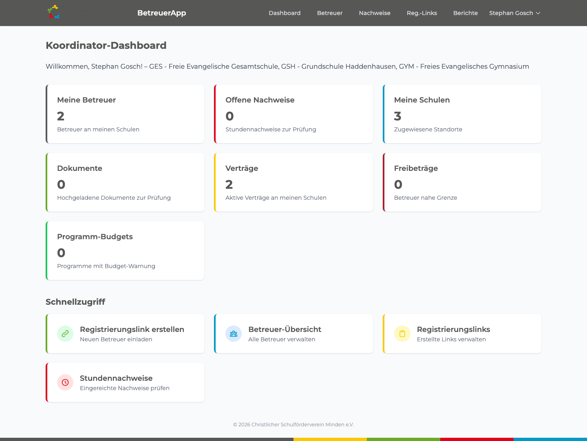
📷 Screenshot: Koordinator-Dashboard (koordinator_dashboard.png)
'">
Koordinator-Dashboard mit den zugewiesenen Schulen und Kennzahlen
Die Begrüßungszeile nennt alle Schulen des Koordinators. Die Kennzahl-Kacheln umfassen:
- Meine Betreuer – Anzahl Betreuer an Ihren Schulen
- Offene Nachweise – eingereichte Stundennachweise, die auf Ihre Prüfung warten
- Meine Schulen – Anzahl der zugewiesenen Standorte
- Dokumente – hochgeladene Dokumente, die geprüft werden müssen
- Verträge – aktive Verträge an Ihren Schulen
- Freibeträge – Betreuer, die sich dem Jahreslimit nähern
- Programm-Budgets – Programme mit Budget-Warnung
Neuen Betreuer einladen
Um einen neuen Betreuer in das System aufzunehmen, erstellen Sie einen Einladungslink:
1
„Registrierungslink erstellen" klicken
Im Dashboard unter Schnellzugriff oder über den Menüpunkt Reg.-Links → Neuer Link.
2
Schule auswählen
Wählen Sie die Schule des neuen Betreuers aus der Dropdown-Liste.
3
Einstellungen festlegen
Einmaliger Link: Der Link kann nur einmal verwendet werden (empfohlen). Gültig für (Tage): Wie lange der Link aktiv bleibt (Standard: 30 Tage). Notizen: Optional, z.B. Name des künftigen Betreuers.
4
„Link erstellen" klicken
Die vollständige Link-URL wird oben auf der Seite angezeigt. Kopieren Sie diese und senden Sie sie per E-Mail an den zukünftigen Betreuer.
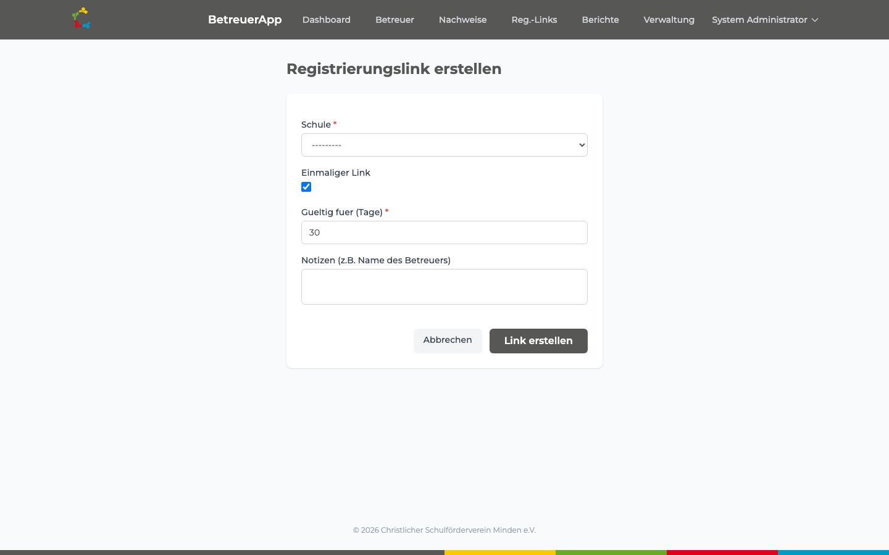
📷 Screenshot: Registrierungslink erstellen (reg_link_erstellen.png)
'">
Formular zum Erstellen eines Registrierungslinks – Schule wählen, Gültigkeit setzen
Registrierungslinks verwalten
Unter Reg.-Links in der Navigationsleiste sehen Sie alle erstellen Links mit Status (aktiv, verwendet, abgelaufen) und Erstellungsdatum.
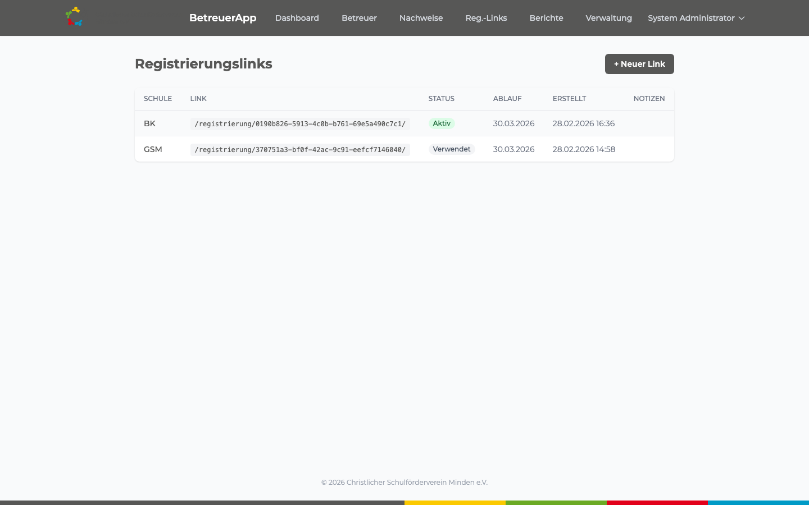
📷 Screenshot: Registrierungslink-Liste (reg_links_liste.png)
'">
Übersicht aller erstellten Registrierungslinks mit Status und Ablaufdatum
Betreuer-Daten prüfen und Vertrag generieren
Nachdem sich ein Betreuer registriert hat, erscheint er in der Betreuer-Liste mit dem Status „Registriert". Als Koordinator prüfen Sie die Daten:
1
Betreuer-Liste öffnen
Im Dashboard auf „Betreuer-Übersicht" klicken oder den Menüpunkt „Betreuer" nutzen.
2
„Prüfen" klicken
Neben dem neuen Betreuer erscheint ein Link „Prüfen". Klicken Sie darauf.
3
Daten kontrollieren
Prüfen Sie persönliche Angaben, Bankdaten und Vertragsdaten (Stundensatz, Programm, Schule). Bei Fehlern wenden Sie sich an den Betreuer, um die Daten zu korrigieren.
4
„Bestätigen" klicken
Wenn alles stimmt, auf „Daten bestätigen" klicken. Das System generiert automatisch alle erforderlichen Dokumente (Vertrag, Verpflichtungserklärung, etc.) als PDF.
Stundennachweise prüfen und genehmigen
Betreuer reichen ihre Stundennachweise monatlich ein. Sie erscheinen dann in Ihrer Nachweise-Liste.
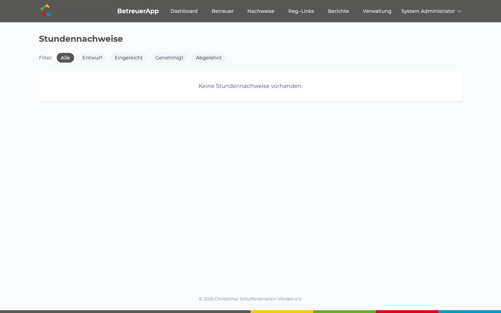
📷 Screenshot: Stundennachweise (stundennachweise.png)
'">
Stundennachweise – nach Status filterbar (Alle / Entwurf / Eingereicht / Genehmigt / Abgelehnt)
1
Filter „Eingereicht" wählen
So sehen Sie nur die Nachweise, die auf Ihre Prüfung warten.
2
Nachweis öffnen
Auf den Betreuer-Namen oder „Details" klicken, um alle Einzeleinträge des Monats zu sehen.
3
Prüfen und entscheiden
Stimmen Datum, Zeiten und Beschreibung? Dann auf „Genehmigen" klicken. Bei Unstimmigkeiten „Ablehnen" und einen Ablehnungsgrund eingeben – der Betreuer wird automatisch benachrichtigt.
ℹ️
Nach der Genehmigung
Das System erzeugt automatisch ein PDF des Stundennachweises und informiert die Buchhaltung (Admin) via N8N-Benachrichtigung. Der genehmigte Betrag fließt in die zentrale Auswertung und das Budget des Förderprogramms ein.
Betreuer aktivieren
Sobald alle Dokumente geprüft und akzeptiert sind, können Sie den Betreuer aktivieren:
1
Betreuer-Detailseite öffnen
Betreuer-Liste → Details klicken.
2
„Betreuer aktivieren" klicken
Der Status wechselt zu „Aktiv". Ab diesem Moment kann der Betreuer Stunden erfassen.
Berichte – Monatsübersicht
🏛️ Admin
🏫 Koordinator
Die Monatsübersicht ist die Standard-Auswertung am Monatsende. Sie zeigt alle genehmigten Stundennachweise eines bestimmten Monats – gruppiert nach Schule, mit Summen je Betreuer und Auszahlbetrag. Genau das, was die Buchhaltung für den Lohnlauf braucht.
Erreichbar über die obere Navigation unter „Berichte" → „Monatsübersicht" (URL: /berichte/monatsuebersicht/).
Wer sieht was?
| Rolle | Sichtbarkeit |
|---|
| Admin | Alle Schulen. Filter nach Schule, Monat und Jahr. |
| Koordinator | Nur die eigenen Schulen. Filter nach Monat und Jahr. |
1
Monat und Jahr wählen
Standardmäßig ist der Vormonat vorausgewählt – das ist meist genau die Abrechnung, die jetzt ansteht.
2
(Admin) Schule eingrenzen
Optional auf eine einzelne Schule beschränken. Leer lassen für „alle Schulen".
3
„Filtern" klicken
Die Tabelle wird aktualisiert: Betreuer, Anzahl Stunden, Stundensatz, Auszahlungsbetrag, Status.
4
CSV-Export
Über „CSV Export" wird eine Datei monatsuebersicht_YYYYMM.csv heruntergeladen. Lässt sich direkt in Excel oder LibreOffice öffnen und an die Buchhaltung weitergeben.
ℹ️
Nur genehmigte Stunden
Eingereichte, aber noch nicht genehmigte Nachweise erscheinen nicht in der Monatsübersicht. Wenn Zahlen fehlen: prüfen Sie unter „Nachweise" → Filter „Eingereicht", ob noch Nachweise auf Ihre Entscheidung warten.
Berichte – Freibetrag-Übersicht
🏛️ Admin
🏫 Koordinator
Die Freibetrag-Übersicht zeigt für jeden aktiven Betreuer den Stand seines Jahres-Freibetrags. Mit einem Blick sehen Sie, wer demnächst über die 3.300 €-Grenze rutscht. Erreichbar unter „Berichte" → „Freibetrag-Übersicht" (URL: /berichte/freibetrag-uebersicht/).
Was steht in der Tabelle?
- Betreuer – Name und Schule
- Verbraucht – wie viel des Freibetrags dieses Jahr genutzt wurde (€)
- Restbetrag – wie viel noch übrig ist
- Auslastung – Prozent-Balken mit Farbcode (grün/gelb/orange/rot, identisch zur Dashboard-Ampel)
- Anderer Verein – falls in der Selbstauskunft angegeben
💡
Vorausschauend planen
Wer im Herbst schon bei 80 % steht, schafft das ganze Schuljahr nicht steuerfrei. Sortieren Sie die Tabelle nach Auslastung absteigend und sprechen Sie mit den betroffenen Betreuern, bevor die rote Marke erreicht ist.
Auch hier gibt es einen CSV-Export – nützlich, um die Liste z.B. in einer Tabellenkalkulation weiterzubearbeiten oder an die Geschäftsstelle zu mailen.
Dokumente erneuern
Manche Dokumente sind zeitlich begrenzt gültig. Das System überwacht den Ablauf automatisch und schickt rechtzeitig Erinnerungen.
| Dokument | Gilt für | Gültigkeit | Was passiert vor Ablauf? |
|---|
| Infektionsschutzbelehrung (IfSB) |
alle Betreuer |
24 Monate |
System erstellt 30 Tage vor Ablauf ein neues PDF und benachrichtigt den Betreuer per E-Mail. |
| Erweitertes Führungszeugnis |
nur externe Betreuer (keine Schüler/innen) |
3 Monate ab Ausstellung |
System mahnt rechtzeitig zur Neubeantragung beim Bürgeramt. |
| Masernschutznachweis |
alle Betreuer |
unbefristet (Immunität ist dauerhaft) |
keine Erneuerung nötig |
| Vertrag & Vertraulichkeitserklärung |
alle Betreuer |
solange aktiv |
neuer Vertrag bei Tätigkeitswechsel oder neuem Schuljahr |
Ablauf einer Erneuerung
📅
System erkennt nahenden Ablauf
täglich automatisch
→
📄
Neues PDF wird generiert
System
→
📧
E-Mail an Betreuer + Koordinator
System
→
✍️
Betreuer unterschreibt & lädt hoch
Betreuer
→
✅
Koordinator prüft & akzeptiert
Koordinator
⚠️
Fristen ernst nehmen
Läuft ein Dokument ab, ohne dass eine Erneuerung vorliegt, kann der Betreuer rechtlich nicht eingesetzt werden. Der Koordinator sollte spätestens 14 Tage nach der ersten Erinnerung beim Betreuer nachhaken.
⚙️
Technisch (für Admins)
Die tägliche Prüfung läuft als Background-Task: python manage.py check_document_renewals. In der Produktion wird das per Cron im Docker-Container ausgeführt. Erinnerungen werden nur einmal pro Dokument gesendet (Flag renewal_reminder_sent).
Betreuer – Registrierung
🎒 Für Betreuer
👋
Hallo!
Du leitest eine AG, machst Hausaufgabenbetreuung oder hilfst sonst an der Schule mit? Dann bist Du hier richtig. In den nächsten Abschnitten reden wir Dich direkt mit „Du" an – damit es leichter zu lesen ist.
Du hast vom Koordinator Deiner Schule einen Einladungslink bekommen – per E-Mail oder direkt persönlich. Klick auf diesen Link, dann öffnet sich das Registrierungsformular.
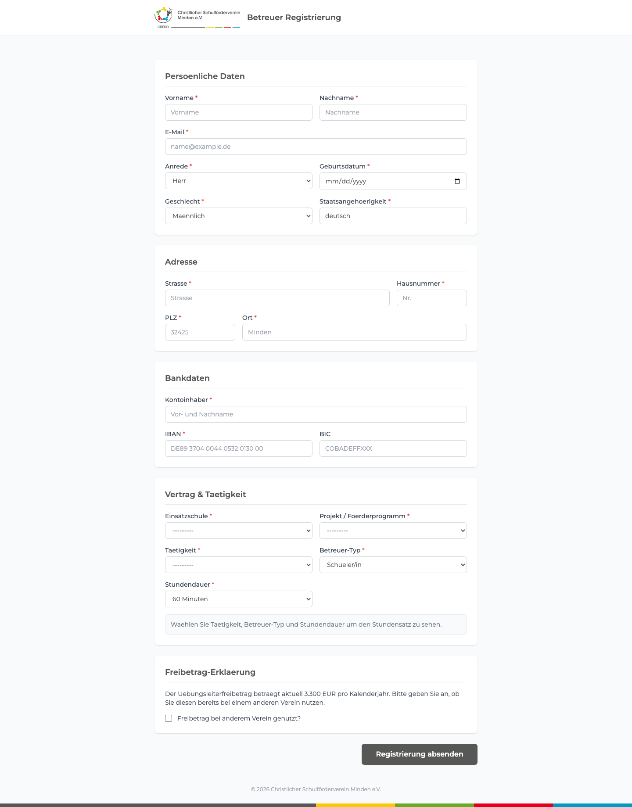
📷 Screenshot: Registrierungsformular oben (registrierung_oben.png)
'">
Registrierungsformular – persönliche Daten: Name, E-Mail, Anrede, Geburtsdatum, Staatsangehörigkeit
Das Formular Schritt für Schritt ausfüllen
1. Persönliche Daten
- Vorname & Nachname – so wie es in Deinem Ausweis steht
- E-Mail-Adresse – mit der meldest Du Dich später an. Bitte sorgfältig prüfen, ein Tippfehler hier macht später Ärger.
- Anrede – Herr / Frau / Divers
- Geburtsdatum – TT.MM.JJJJ
- Geschlecht & Staatsangehörigkeit
2. Adresse
- Straße, Hausnummer, PLZ und Ort – Deine Wohnadresse, an die später die Lohnsteuerbescheinigung geschickt wird.
3. Bankverbindung
- Kontoinhaber – der Name auf dem Konto. Darf auch ein Elternteil sein.
- IBAN – Deutsche IBAN beginnt mit DE und hat 22 Stellen. Steht auf Deiner EC-Karte.
- BIC – nur nötig, wenn Dein Konto im Ausland ist. Sonst leer lassen.
🔒
Deine IBAN ist sicher
Die IBAN wird in der Datenbank verschlüsselt gespeichert. Auch der Admin sieht sie auf seinen Übersichten nur teilweise (z.B. DE12 **** **** **** **34). Niemand kann sie versehentlich kopieren oder weitergeben.

Registrierungsformular – Vertragsdaten: Schule, Förderprogramm, Tätigkeit und Freibetrag-Erklärung
4. Vertrag & Tätigkeit
- Einsatzschule – an welcher Schule machst Du die AG?
- Projekt / Förderprogramm – die Liste füllt sich, sobald Du die Schule ausgewählt hast.
- Tätigkeit – z.B. AG-Leitung, Hausaufgabenbetreuung, Pausenbegleitung
- Betreuer-Typ – „Schüler/in" oder „Externe Person"
- Stundendauer – 60 Minuten (volle Stunde) oder 45 Minuten (Schulstunde) pro Einheit
- Den Stundensatz brauchst Du nicht eintragen – das System berechnet ihn automatisch aus Tätigkeit und Betreuer-Typ.
5. Freibetrag-Erklärung
💡
Was ist der Übungsleiterfreibetrag?
Der Staat sagt: Wer ehrenamtlich oder nebenberuflich Kinder und Jugendliche betreut, ausbildet oder unterrichtet, darf bis zu 3.300 € pro Jahr verdienen, ohne Steuern zu zahlen. Das ist der „Übungsleiterfreibetrag" (§ 3 Nr. 26 EStG).
Solange Du unter 3.300 € im Kalenderjahr bleibst, bekommst Du den vollen Betrag ausgezahlt. Darüber fallen Steuern und Sozialabgaben an.
Im Formular wirst Du gefragt: „Nutzt Du den Freibetrag bereits bei einem anderen Verein?" Wichtig: Der Freibetrag gilt insgesamt, nicht pro Verein. Wenn Du z.B. schon 1.000 € bei der Sportjugend abrechnest, bleiben Dir hier nur noch 2.300 €.
Wenn Du „Ja" anklickst, erscheinen zwei zusätzliche Felder: Betrag (wie viel Du beim anderen Verein abrechnest) und Vereinsname.
⚠️
Bitte ehrlich antworten
Die Angabe ist rechtlich verbindlich. Wenn Du den Freibetrag versehentlich doppelt nutzt, kann das Finanzamt das Geld später zurückfordern. Wenn Du unsicher bist, frag Deine Eltern oder den Koordinator.
✓
„Registrierung absenden" klicken
Es kommt eine Bestätigungsseite. Danach prüft der Koordinator Deine Daten und schickt Dir die Vertragsdokumente (kommen als PDF per E-Mail).
Passwort setzen (nach der Registrierung)
Kurz nach Deiner Registrierung bekommst Du automatisch eine E-Mail mit einem Link zum Passwort setzen. Der Link ist nur einmal verwendbar und 72 Stunden gültig.
1
E-Mail öffnen
Betreff: „Willkommen bei der BetreuerApp – Passwort setzen". Schau auch im Spam-Ordner nach, falls Du nichts findest. Klick auf den Link in der E-Mail.
2
Passwort eingeben
Wähle ein sicheres Passwort: mindestens 8 Zeichen, gemischt aus Groß-/Kleinbuchstaben und Zahlen. Tipp: Nimm einen Satz, den nur Du kennst, z.B. „MeinHund2017Bello!" – leicht zu merken, schwer zu raten.
3
„Passwort speichern" klicken
Du landest auf einer Bestätigungsseite. Ab jetzt kannst Du Dich anmelden – Dein Benutzername ist der Teil Deiner E-Mail vor dem @-Zeichen. Beispiel: aus max.muster@web.de wird der Benutzername max.muster.
⚠️
Link abgelaufen oder nicht angekommen?
Melde Dich beim Koordinator. Der kann beim Admin einen neuen Link anfordern – das dauert nur kurz.
Dein Dashboard
Nach der Anmeldung landest Du auf Deinem Dashboard. Hier siehst Du auf einen Blick, wo Du gerade stehst:
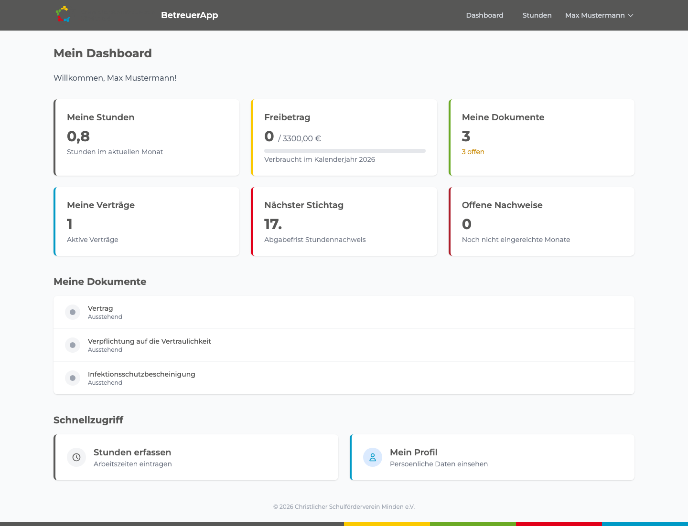
📷 Screenshot: Betreuer-Dashboard (betreuer_dashboard.png)
'">
Betreuer-Dashboard mit Stunden, Freibetrag, Dokumenten-Checkliste und Schnellzugriff
| Kachel | Was siehst Du dort? |
|---|
| Meine Stunden | Wie viele Stunden Du diesen Monat schon eingetragen hast. Klick drauf, um zur Stunden-Seite zu kommen. |
| Freibetrag | Wie viel von Deinen 3.300 € Du dieses Jahr schon verbraucht hast. Farbiger Balken zeigt den Stand. |
| Meine Dokumente | Wie viele Unterlagen Du insgesamt hast und wie viele noch fehlen. |
| Meine Verträge | Anzahl Deiner aktiven Verträge (Du kannst auch mehrere haben, z.B. an zwei Schulen). |
| Nächster Stichtag | Immer der 17. des nächsten Monats – bis dahin müssen die Stunden eingereicht sein, sonst gibt's keine Auszahlung in der Runde. |
| Offene Nachweise | Monate, für die Du noch keinen Nachweis eingereicht hast. |
🚦
Die Freibetrag-Ampel verstehen
Der Balken färbt sich automatisch:
- ■ grün – Du hast noch viel Spielraum.
- ■ gelb – 80 % erreicht. Augen auf.
- ■ orange – 90 % erreicht. Bald ist Schluss für dieses Jahr.
- ■ rot – 100 % verbraucht. Weitere Stunden werden steuerpflichtig.
Der Freibetrag wird jedes Jahr am 1. Januar zurückgesetzt – nicht zum Schuljahresbeginn!
Stunden erfassen
Klick im Dashboard auf „Meine Stunden" oder oben in der Navigation auf „Stunden".
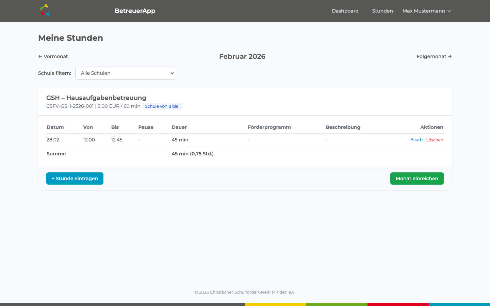
📷 Screenshot: Stunden erfassen (stunden_erfassen.png)
'">
Stundenerfassung für den aktuellen Monat – vorhandene Einträge und Eingabeformular
Die Seite zeigt den aktuellen Monat mit allen Stunden, die Du schon eingetragen hast. Mit den Pfeilen ← Vormonat / Folgemonat → wechselst Du zu anderen Monaten.
📋
Mehrere Verträge?
Wenn Du an mehreren Schulen oder in mehreren Programmen arbeitest, hast Du auch mehrere Verträge. Pro Vertrag gibt es einen eigenen Monatsnachweis. Du kannst oben auf der Seite zwischen den Verträgen umschalten.
1
„+ Stunde eintragen" klicken
Ein kleines Formular klappt direkt darunter auf.
2
Datum, Von und Bis eingeben
Genaues Datum sowie Start- und Endzeit der AG-Einheit. Beispiel: 14.03.2026, 14:00 bis 15:30 Uhr.
3
Pause eingeben (optional)
Falls Du Pause gemacht hast, trag die Minuten ein. Sonst auf 0 lassen.
4
Förderprogramm wählen
Die Liste zeigt nur die Programme, die zu Deinem Vertrag passen. Wenn nur eins zur Auswahl steht, ist es automatisch ausgewählt.
5
Beschreibung (optional)
Kurze Notiz zur Einheit, z.B. „Schach-Turniervorbereitung" oder „Mathe-Hilfe Klasse 6". Hilft Dir und dem Koordinator beim Nachvollziehen.
6
„Speichern" klicken
Der Eintrag taucht sofort in der Tabelle auf. Du kannst ihn jederzeit über „Bearb." ändern oder mit „Löschen" entfernen – aber nur solange Du den Monat noch nicht eingereicht hast.
💡
Stunden nachtragen ist okay
Du musst nicht jeden Tag eintragen. Auch sammeln und am Monatsende eingeben ist möglich. Solange der Monat nicht eingereicht ist, kannst Du alles anpassen.
Monat einreichen
Am Ende des Monats musst Du Deine Stunden „einreichen" – das ist quasi das digitale Abschicken Deines Stundenzettels. Frist: 17. des Folgemonats.
1
Alle Stunden noch einmal prüfen
Bist Du sicher, dass alle Termine drin sind? Stimmen die Zeiten? Nach dem Einreichen kannst Du nichts mehr ändern.
2
„Monat einreichen" klicken
Der grüne Button steht rechts unter der Tabelle. Es kommt eine Sicherheitsabfrage – mit „Ja, einreichen" bestätigen.
3
Warten auf Genehmigung
Jetzt schaut sich der Koordinator den Nachweis an. Du bekommst eine E-Mail, sobald er genehmigt oder abgelehnt hat.
🚨
Frist nicht verpassen!
Bis zum 17. des Folgemonats muss der Monat eingereicht sein. Wer später dran ist, wartet einen Monat länger auf die Auszahlung – das System macht keine Ausnahmen.
Deine Dokumente
Im Dashboard-Abschnitt „Meine Dokumente" siehst Du alle Unterlagen, die Du brauchst, mit ihrem aktuellen Status. Welche Dokumente Du genau brauchst, hängt davon ab, ob Du Schüler/in oder externe Person bist.
| Status | Symbol | Bedeutung / Was kannst Du tun? |
|---|
| Ausstehend | ⚪ Grau | Dokument ist noch nicht erstellt. Warte auf den Koordinator. |
| Generiert / Versendet | 🔵 Blau | Das PDF ist da. Lade es runter, drucke es aus, unterschreibe es und lade es wieder hoch. |
| Hochgeladen | 🟡 Gelb | Du hast es abgegeben, der Koordinator schaut es sich an. |
| Geprüft | 🟢 Grün | Alles gut, fertig. |
| Abgelehnt | 🔴 Rot | Etwas hat nicht gepasst (z.B. Unterschrift fehlt, Foto unscharf). Der Grund steht dabei – einfach neu hochladen. |
Dokument hochladen
1
PDF herunterladen (falls vorhanden)
Klick auf „PDF" neben dem Dokument. Es wird heruntergeladen.
2
Unterschreiben
Drucke das Dokument aus, unterschreibe es mit der Hand und scanne es ein. Wenn Du keinen Scanner hast: einfach mit dem Handy abfotografieren. Wichtig: gut lesbar, hell und gerade.
3
„Hochladen" klicken
Klick auf den blauen Button neben dem Dokument. Wähle die Datei aus (PDF, JPG oder PNG, maximal 10 MB). Größere Dateien lehnt das System ab.
4
„Absenden" klicken
Fertig. Der Status wechselt auf gelb und der Koordinator prüft.
🔁
Manche Dokumente müssen erneuert werden
Die Infektionsschutzbelehrung ist 2 Jahre gültig, das Führungszeugnis (nur für externe Betreuer) muss alle 3 Monate frisch sein. Keine Sorge – das System erinnert Dich automatisch per E-Mail, bevor etwas abläuft. Details unter „Dokumente erneuern".
Profil verwalten
Oben rechts neben Deinem Namen ist ein kleines Dropdown. Klick dort auf „Profil" (oder im Dashboard auf den Schnellzugriff).
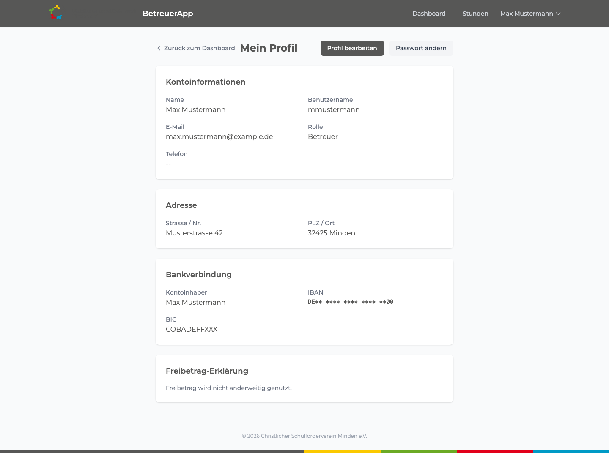
📷 Screenshot: Betreuer-Profil (betreuer_profil.png)
'">
Profilseite mit Kontoinformationen, Adresse und (geschwärzter) Bankverbindung
Auf der Profilseite siehst Du alles, was über Dich hinterlegt ist. Mit „Profil bearbeiten" kannst Du folgendes selbst ändern:
- Adresse (z.B. wenn Du umziehst)
- Telefonnummer
- Bankverbindung (IBAN, Kontoinhaber)
- Freibetrag-Angabe (wenn sich Deine Situation bei einem anderen Verein ändert)
Mit „Passwort ändern" setzt Du jederzeit ein neues Passwort.
📝
Jede Änderung wird protokolliert
Aus rechtlichen Gründen merkt sich das System: Wer hat wann was geändert? – z.B. wenn Du Deine IBAN aktualisierst. Das ist nichts Schlimmes, sondern Standard für Personalverwaltung. Eltern und Lehrkräfte können das beruhigen.
Prozessablauf: Betreuer-Registrierung
Der vollständige Ablauf von der Einladung bis zur Aktivierung:
📧
Koordinator erstellt Einladungslink
Koordinator
→
📝
Betreuer füllt Registrierungsformular aus
Betreuer
→
📬
Passwort-Link per E-Mail (automatisch)
System
→
🔑
Betreuer setzt Passwort
Betreuer
🔍
Koordinator prüft Daten
Koordinator
→
📄
Dokumente generiert & versendet
System
→
✍️
Betreuer unterschreibt & lädt hoch
Betreuer
→
✅
Betreuer wird aktiviert
Koordinator
Prozessablauf: Monatliche Abrechnung
So läuft die monatliche Stundenabrechnung ab:
⏱️
Betreuer trägt Stunden ein (laufend)
Betreuer
→
📤
Monat einreichen (bis 17.)
Betreuer
→
🔍
Koordinator prüft & genehmigt
Koordinator
→
📊
PDF erzeugt, Buchhaltung informiert
System
→
💶
Auszahlung durch Buchhaltung
Admin
Prozessablauf: Budget einrichten
1
Admin erstellt Förderprogramm in der Django-Verwaltung
Name, Schuljahr und ggf. Kostenstelle zuweisen.
2
Budget eintragen
Im Feld „Budget (EUR)" den Jahresbetrag für das Programm eintragen und speichern.
3
Koordinator verknüpft Betreuer-Verträge mit dem Programm
Bei der Betreuer-Registrierung wird das Programm im Formular gewählt.
4
Automatische Budget-Überwachung
Ab dem ersten genehmigten Stundennachweis berechnet das System den Verbrauch und zeigt ihn auf allen Dashboards. Bei 80/90/100 % erscheinen farbige Warnungen.
Häufige Fragen (FAQ)
Ich habe mein Passwort vergessen – was tun?
Melde Dich beim Koordinator Deiner Schule. Der kann beim Admin einen neuen Passwort-Reset-Link für Dich anfordern. Du bekommst den Link dann per E-Mail.
Ich sehe keine „Monat einreichen"-Schaltfläche.
Der Button erscheint nur, wenn (1) mindestens ein Stundeneintrag im Monat existiert und (2) der Monat noch nicht eingereicht wurde. Prüfe, ob Du auf der richtigen Seite bist – manchmal landet man versehentlich im Folgemonat.
Mein Stundennachweis wurde abgelehnt – was jetzt?
Der Koordinator hat den gesamten Monatsnachweis mit einem Ablehnungsgrund zurückgeschickt. Du bekommst eine E-Mail mit dem Grund (z.B. „Datum stimmt nicht mit Stundenplan überein"). Korrigiere die Einträge und reiche den Monat noch einmal ein.
Wie wechsle ich zwischen Monaten?
Auf der Stunden-Seite findest Du oben die Pfeile „← Vormonat" und „Folgemonat →". Du kannst bis zu 12 Monate zurückgehen, um etwas nachzutragen.
Ich habe mich an einer falschen Schule registriert.
Melde Dich beim Koordinator – der kann die Schule im Vertrag korrigieren. Nicht noch einmal registrieren! Das gibt sonst doppelte Datensätze.
Wann bekomme ich mein Geld?
Sobald der Koordinator Deinen Stundennachweis genehmigt, geht eine Info an die Buchhaltung. Diese rechnet meist einmal pro Monat ab – also typischerweise zum Monatsende nach der Genehmigung. Frist für die Einreichung: bis zum 17. des Folgemonats.
Was ist überhaupt eine „Kostenstelle"?
Stell Dir die Kostenstelle wie eine kleine Schublade in der Buchhaltung vor: Jedes Förderprogramm hat seine eigene Schublade (z.B. „KST-4711" für „OGS Hausaufgabenhilfe"). Wenn Deine Stunden ausgezahlt werden, weiß die Buchhaltung damit genau, aus welcher Schublade das Geld kommt. Du musst Dich darum nicht kümmern – das System trägt die richtige Kostenstelle automatisch ein.
Was heißt „Freibetrag bei anderem Verein genutzt"?
Der Übungsleiterfreibetrag (3.300 €/Jahr) gilt für Dich insgesamt, nicht pro Verein. Wenn Du z.B. zusätzlich beim Sportverein als Trainer/in 1.000 € im Jahr verdienst, sind hier nur noch 2.300 € steuerfrei möglich. Deshalb fragt das Formular Dich danach – damit die Berechnung stimmt und es später keine Steuer-Nachzahlung gibt.
Wie ändere ich meine E-Mail-Adresse?
Im Menü oben rechts → Profil → Profil bearbeiten. Die neue Adresse wird ab sofort für alle Benachrichtigungen verwendet. Dein Benutzername bleibt allerdings gleich (der ändert sich nicht automatisch).
Ich habe mehrere Verträge – sehe ich alle?
Ja. Im Dashboard zeigt die Kachel „Meine Verträge" die Anzahl. Auf der Stunden-Seite kannst Du oben zwischen den Verträgen umschalten – jeder bekommt einen eigenen Monatsnachweis. Wichtig: Deine Stunden zählen gemeinsam auf den Freibetrag, egal wo Du sie machst.
Wann muss ich mein Führungszeugnis erneuern?
Nur externe Betreuer/innen (also keine Schüler/innen der Schule) brauchen ein erweitertes Führungszeugnis, und das darf maximal 3 Monate alt sein. Das System erinnert Dich rechtzeitig per E-Mail, bevor die Frist abläuft. Das Zeugnis bekommst Du beim Bürgeramt – Schülerinnen und Schüler müssen sich darum gar nicht kümmern.
Wann muss ich die Infektionsschutzbelehrung erneuern?
Alle 2 Jahre. Das System erinnert Dich automatisch und erstellt ein neues Formular. Du musst es nur unterschreiben und wieder hochladen – wie beim ersten Mal.
Ich habe einen Stundeneintrag falsch gespeichert – kann ich das korrigieren?
Ja, solange der Monat noch nicht eingereicht ist. Klick auf „Bearb." neben dem Eintrag in der Tabelle, ändere die Werte und speichere erneut. Mit „Löschen" entfernst Du den Eintrag komplett.
Sind meine Bankdaten sicher?
Ja. Deine IBAN wird verschlüsselt in der Datenbank gespeichert (Standard-Verschlüsselung „Fernet"). Selbst der Admin sieht in den Übersichten meist nur die letzten 4 Stellen – die vollständige IBAN ist nur für die Auszahlung sichtbar.
Kontakt & Support
| Wer? | Womit kann ich mich melden? | An wen? |
|---|
| Betreuer |
Login-Probleme, vergessenes Passwort, Fehler bei Stunden |
Koordinator der eigenen Schule |
| Koordinator |
Systemfehler, fehlende Berechtigungen, neue Schule einrichten |
Admin / CSFV-Geschäftsstelle |
| Admin |
Technische Probleme, Systemkonfiguration |
Technischer Administrator |